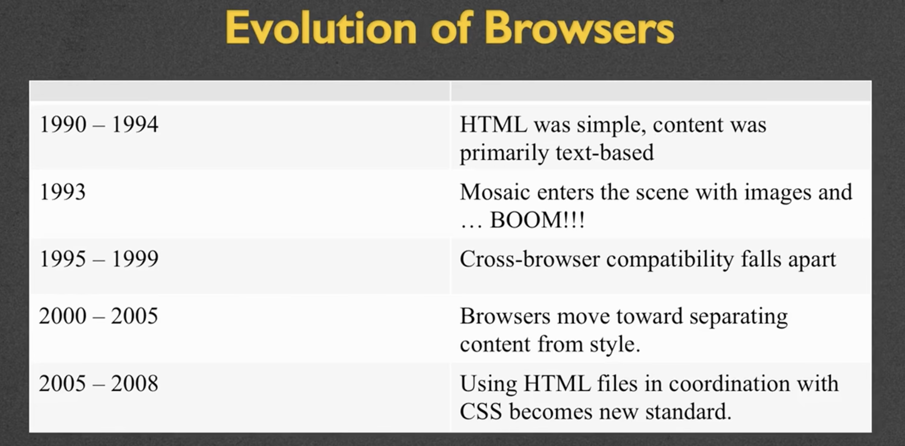
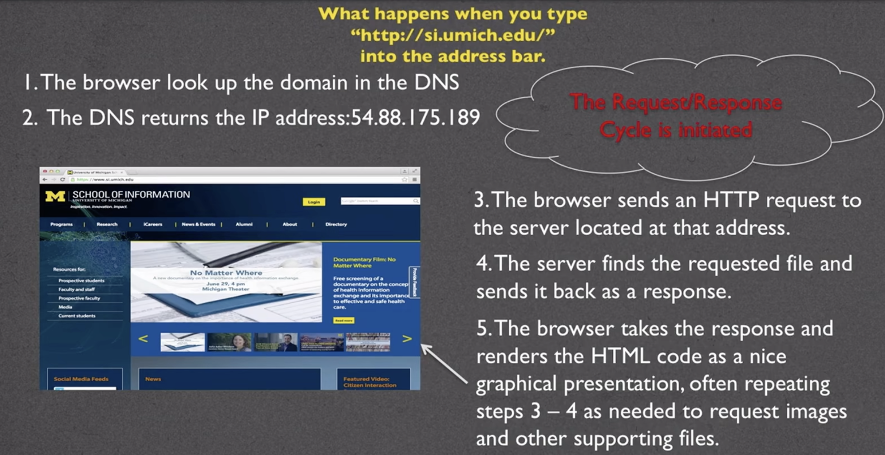

Note:
Pesistent!
It's all about working smart, not necessarily hard.
Practice, practice, practice!
Accessiblility!
HTML的演进历程
a web of connections (for research)
- HTML is created in 1990 as a way to electronically connect documents via hyperlinks.
- 内容>>形式 -- implies no device-specific markup
- a common language betweet all platforms
Mosaic (research --> commercial)
In 1993, Mosaic emerged as the first graphical browser.
The Browser War
- proprietary tags
- Other tags that went against the spirit of the orginal tenets of HTML were added, e.g. font, center, etc.
- Origination of "Best viewed on" messages.（推荐使用……浏览器打开）
This comes back to the idea that no one "runs" the Internet or the Web.（互联网没有单一管理机构）

页面请求的幕后机制
What happens when you type something into the address bar of your browser.
client-server relationship
Server
- machines that hold all the resources
- always connected to the network
Client
- machine for personal use
- what we are using, e.g. laptops, phone,etc.
Networks(The Internet)
- LAN - local area network（局域网） - like your office buliding
- WAN - wide area network（广域网） - might be a university, where you want be able to share servers across multiple buildings.
Protocols
- HTTP - Hypertext Transfer Protocol（超文本传输协议）
- HTTPS - a more secure protocol
- FTP - File Transfer Protocol（文件传输协议）
Domain Names（域名）
- Identifies the entitiy you want to connect to.
- Each has different top-level domain, e.g. .edu .com, etc. (determined by ICAAN - Internet Corporation for Assigned Names and Numbers)
*Your domain name is actually mapped to an address.
IP Addresses
XXXX:XXXX:XXXX:XXXX:XXXX:XXXX:XXXX:XXXX > 300 trillion posibilities
Luckily, you don't need to type the full IP address.
The DNS(Domain Name Server) will look up the IP address based on the URL(Uniform/Universal Resource Locator - 统一资源定位地址) you type in.
Document
- URLs can specify a specific document.
- If no document is specified, the default document（默认文档） is returned.
The Request
Once the IP address is determined, the browser creats an HTTP request.
Lots of hidden information in this request. (headers, cookies, form data, etc)
The Response
The server returns (lots of) files, not "web pages".
If the server can't fulfill the request, it will send back files with error codes: 404, 500, etc.
